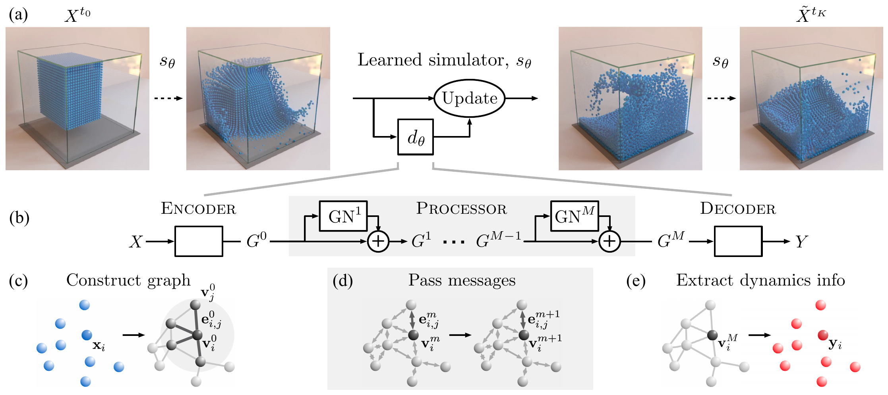

01
Breakable
破断あり
Physical AI · Material Simulation
統一材料シミュレーションフレームワーク — 研究デモと共同研究テーマ
材料の違いを、学習の可能性へ。
統一的な物理表現を起点に、物理データの生成、学習型シミュレーション、ロボット実機での学習をつなぐ。
One physical representation. Three research directions: better robot learning, richer physics data, and generalizable learned simulators.
Research vision
A shared physical foundation for data, models and real-world learning.
シミュレーションを、結果を計算する道具から、AIが経験を積み、実世界の情報で更新される学習基盤へ。NVIDIAのNewtonは、拡張可能な物理ソルバやシステム同定を、Isaac Lab・MuJoCo Playgroundなどのロボット学習環境へつなぐ方向を示しています。[2] 本研究ではその流れを、材料・接触・変形を共通の物理量で扱う表現から掘り下げます。
研究キーワードの関係 / Research map
状態 State · 接続関係 Topology · グラフ Graph
位置・速度・材料特性と、粒子間の相互作用
剛体 · 弾性体 · 弾塑性体 · 塑性体
物理モデル × FP64数値計算
以下は共同研究として検証したい3つのテーマです。現在の材料挙動デモは動画ギャラリーで紹介しています。
Sim-to-Real-to-Sim reinforcement learning
仮想環境で学んだ動作を実機へ移すだけでなく、実機で見つかったずれをシミュレーションへ戻す。材料の硬さや摩擦、変形が変わる作業でも、方策と物理モデルを一緒に更新する学習ループを目指します。
統一的な物理表現は、材料ごとにモデルを分ける方法に比べ、RLの学習・実機への移行・再校正を、より少ない実機試行でつなげられるか？
方策と物理モデルを更新するループ
まずは硬さの異なる対象物を、同じハンドで把持・押込みするタスクから。シミュレーションの予測と実機の力・変形を対応づけ、材料条件を変えても学習の仕組みを共有できるかを調べます。
比較ではタスク・方策・データ量を揃え、可能な範囲で物理モデルの忠実度も合わせます。「統一表現の効果」と「より詳細な物理モデルの効果」を切り分けて検証します。
Train a policy in simulation, deploy it on a robot, identify material and contact parameters from measured motion, forces and deformation, then update the simulator and retrain. The research question is whether a shared physical representation improves transfer and adaptation compared with material-specific models. A first study could use grasping or indentation across objects of different stiffness, measuring real-world success, adaptation trials and physical prediction error.
A physics-based data factory for Physical AI
実験だけでは集めにくい、多様な材料と接触条件の経験をつくる。統一表現と切り替え可能な構成則、FP64の物理計算を基盤に、材料・形状・荷重・境界条件を計画的に変え、AI学習へ渡せる物理データを生成します。
共通のデータ構造で材料と条件を横断したデータを生成することで、実験データが少ない領域でも、学習モデルの頑健性と適用範囲を広げられるか？
条件を設計し、物理を計算し、学習へ渡す
粒子の状態系列に加え、接触力・変形・応力・履歴を表す内部状態などを、対象モデルで定義・取得できる範囲から整備します。構成則、物性値、時間刻み、境界条件も付け、データの意味と再現性を保ちます。
把持・押込みなどの実験で物理モデルを校正し、実データのみで学習した場合と、合成データを加えた場合を比較。未学習の物性値・形状での予測誤差や、必要な実験データ量の変化を調べます。
FP64から、高保真へ。 倍精度は丸め誤差を抑えるための数値的な基盤です。高保真性はそれだけでは決まらず、構成則の妥当性、空間・時間離散化、実験による校正と検証を組み合わせて確かめます。[7]
Generate structured physical trajectories across materials, constitutive laws and boundary conditions using physics-based FP64 computation. Pair outputs with simulation metadata and experimental validation. Study whether these data improve downstream generalization or reduce real-data requirements. Double precision is a numerical foundation, not evidence of physical fidelity by itself. Target outputs include states, contact forces, deformation and model-specific internal variables where available.
Learning transferable dynamics with graph neural networks
粒子をノード、相互作用をエッジとして、物理の時間発展をグラフニューラルネットワーク（GNN）に学習させる。単なるシミュレータの高速な近似にとどまらず、統一物理表現が、異なる材料間での知識共有に役立つかを研究します。
材料特性・内部状態・接触関係を共通のグラフ表現に載せることで、未学習の物性値や相互作用条件へ、よりよく汎化できるか？
物理軌道から、学習可能なグラフへ
同じ構成則の中で、学習時に使わなかった物性値や初期条件を予測するところから開始。材料ごとの個別モデルと、物性・履歴を入力する共通モデルを比較し、その先に異なる構成則への展開を見据えます。

粒子の状態をグラフに変換し、相互作用を学習し、次の状態を予測する流れです。本提案では、この入力表現に材料特性や必要な履歴を持たせ、知識を共有できる範囲を探ります。
外部の先行研究を説明する図であり、本フレームワークの実装・結果を示すものではありません。クリックで拡大できます。 Source: Alvaro Sanchez-Gonzalez, Jonathan Godwin, Tobias Pfaff, Rex Ying, Jure Leskovec & Peter Battaglia. Learning to Simulate Complex Physics with Graph Networks, ICML 2020, PMLR 119, Figure 2 (p. 8460). © The authors. CC BY 4.0 under the PMLR publication agreement. Figure region extracted from the PDF and rasterized; the surrounding text and original caption are omitted. Diagram content unchanged.Use particle states and interactions as graph nodes and edges, and learn dynamics from simulation trajectories. Test whether shared representations of material properties, history and changing contacts improve data efficiency and generalization over material-specific models. Begin with held-out parameters within a constitutive family, before attempting transfer between constitutive laws. Evaluate long-horizon stability and the accuracy–speed trade-off before using learned simulation for planning or RL.
材料の変形と接触が効いてくる、ひとつの実機タスクから始めたいと考えています。対象物・ロボット・計測環境と、この統一材料シミュレーションを組み合わせ、「統一して表すこと」が、学習と実世界への適応をどこまで変えられるかを検証する共同研究を目指します。
Current simulation demos
One framework. Eleven material-behaviour films.
材料ごとの挙動と破断設定を、独立した映像で紹介します。動画はクリックでそのまま再生できます。
Explore material behaviour and fracture settings in individually playable films. “Unbreakable” disables bond breaking; it does not make a deformable material rigid.
Original simulation movies at normal playback speed. Recipes may differ between films; these are behaviour demonstrations, not a controlled benchmark. No video has been retimed or re-encoded for this gallery.
Elastic deformation with bond breaking enabled or disabled.
弾性変形と、破断の有効・無効。
破断あり
破断なし
Component-based rigid motion with bond breaking enabled or disabled.
剛体成分の運動と、破断の有効・無効。
破断あり
破断なし
Two flow-rate recipes. Fracture capacities also differ between recipes; this is a behaviour gallery, not a one-parameter experiment.
異なる流動速度の配合を展示します。配合間では破断容量も異なり、単一パラメータのみの比較ではありません。
破断あり · 流動速度 λ = 5 s⁻¹
Flow rate λ = 5 s⁻¹
破断なし · 流動速度 λ = 5 s⁻¹
Flow rate λ = 5 s⁻¹
破断あり · 流動速度 λ = 0.5 s⁻¹
Flow rate λ = 0.5 s⁻¹
Limited and widespread yielding, with bond breaking enabled or disabled.
降伏が限定的な例と広範に生じる例を、破断の有効・無効ごとに展示します。
破断あり · 降伏が限定的
Limited yielding
破断なし · 降伏が限定的
Limited yielding
破断あり · 広範な降伏
Widespread yielding
破断なし · 広範な降伏
Widespread yielding
Core references
各資料は研究の背景・設計上の着想を示します。本提案の性能や、既存製品との接続が実証済みであることを意味するものではありません。
テーマ01：実機で得た経験を使ってシミュレーションのパラメータ分布を更新し、方策学習を繰り返す先行研究。実機から仮想環境へ戻るループの出発点です。
テーマ01・全体像：拡張可能なソルバ、システム同定、Isaac LabやMuJoCo Playgroundとの関係を示す公式資料。物理シミュレーションとロボット学習をつなぐ産業側の取り組みです。
テーマ02：データの生成・拡張・評価を一連の工程にする構想。本提案は、この流れを材料の力学応答を生成する物理ベースのデータ源へ展開するものです。
テーマ02：合成データの生成、アノテーション、出力を組み合わせる基盤。認識向けデータ生成との接点を示しつつ、本提案は物理状態・力・変形の教師信号に焦点を置きます。
テーマ03：粒子をノードとするグラフ上で相互作用を学習するGNS。初期条件・粒子数・予測時間への汎化を示した研究であり、本提案の材料・構成則をまたぐ汎化は別途検証する問いです。上の外部概念図の出典。
テーマ03：メッシュ上の情報伝播を通じて物理の時間発展を学ぶMeshGraphNets。グラフによる空間表現、解像度と汎化、計算効率の研究を考える基礎です。
テーマ02の技術補足：浮動小数点の表現、単精度・倍精度、丸めと演算順序の影響。数値精度と、実験で検証する物理的な忠実度を区別するための資料です。
文献確認日：2026-10-02。研究キーワードの関係図は本提案のために作成。外部画像の出典・利用条件は図の下と画像クレジットに記載しています。